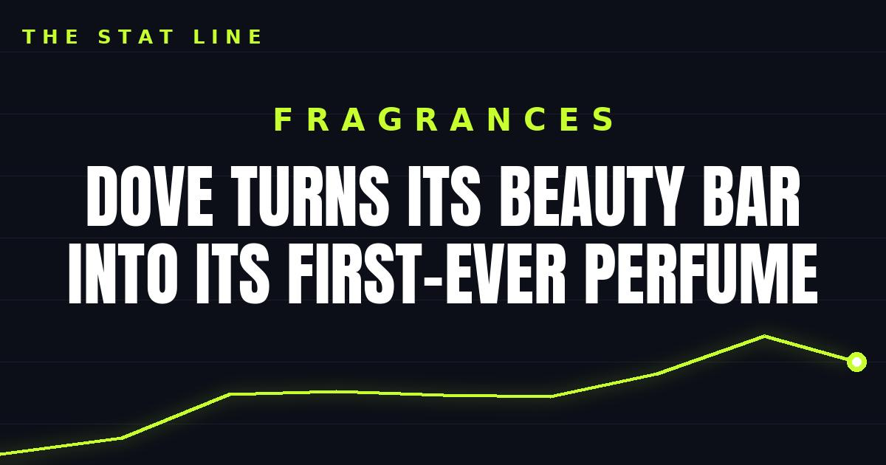

Dove Turns Its Beauty Bar Into Its First-Ever Perfume
Dove opened the waitlist for its first-ever fine fragrance — a one-time social drop developed with perfumer Ann Gottlieb, on sale October 27 at noon ET for $19.57, a nod to the Beauty Bar's 1957 debut.

Disclosure: this post contains affiliate links. I earn a commission on qualifying purchases.
First spritz
Dove opened the waitlist today for its first-ever fine fragrance: Dove Original Fragrance, a one-time social drop developed with perfumer Ann Gottlieb — the nose behind scents like Marc Jacobs' Daisy and Calvin Klein's CK One.
The details
• What: Dove's first fine fragrance, bottling the signature Beauty Bar scent
• Who: Developed with perfumer Ann Gottlieb
• When: On sale October 27 at noon ET — waitlist opened today
• Price: $19.57 — the Beauty Bar's 1957 debut year, pressed into service as the price tag
• Availability: One-time drop; when it's gone, it's gone
The takeaway
The price point is the tell. At $19.57, this isn't a prestige play — it's a nostalgia play priced like a drugstore impulse buy. Dove knows exactly who its audience is: everyone who ever smelled that bar and wanted to bottle it. The one-time-drop structure is pure scarcity marketing, and for $19.57, it'll work.
Sources: Dove's first perfume is inspired by its iconic Beauty Bar (InStyle); Dove launches its first-ever fine fragrance in a one-time social drop (PR Newswire).